-
【PACC非遗进校园计划】第一站：美丽非遗 快乐分享
3月10日
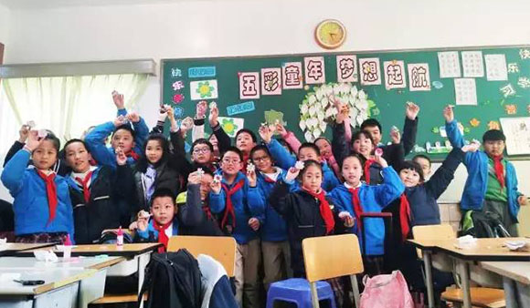
PACC走进法华镇路第三小学，传统文化课程体验活动。
...
-
【PACC非遗传承】建筑彩绘研修班结业展览暨结业典礼圆满召开！
1月12日
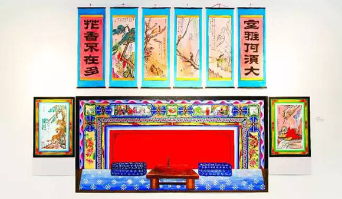
传统民间文化走入当代建筑，建设当下，携手共创。
...
-
【PACC非遗传承】穷天下之谲诡，尽民间之饰丽
1月11日
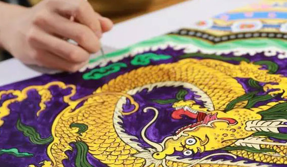
彰显古代建筑彩绘的艺术魅力。
...
-
【PACC非遗传承】上海市召开中国非物质文化遗产传承人群研修研习培训计划（上海市）工作总结交流会
12月29日
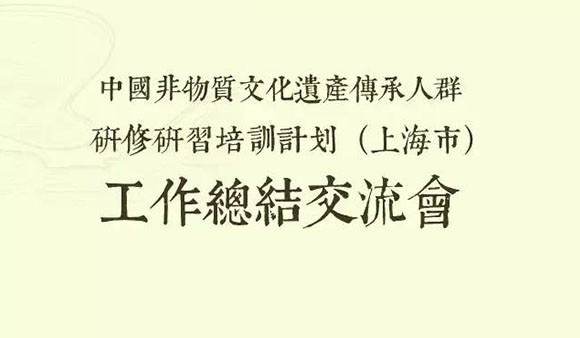
振兴传统工艺，弘扬中华优秀传统文化。
...
-
【PACC非遗传承】一笔一刻勾勒出东方审美情趣
11月25日
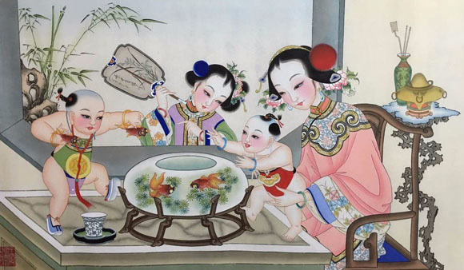
在漫长的历史岁月中，用画笔与刻刀创造古老而独特的民间艺术。
...
-
【PACC非遗传承】文化部非遗传承人群版画研修班开班啦！
11月16日
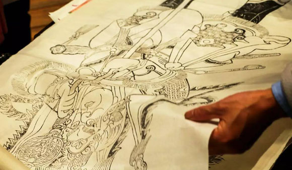
让木版年画重新回到人们的日常生活当中，使其焕发出新的生命力！
...
-
【传统工艺振兴论坛】齐聚济南 共议传统工艺振兴
9月25日
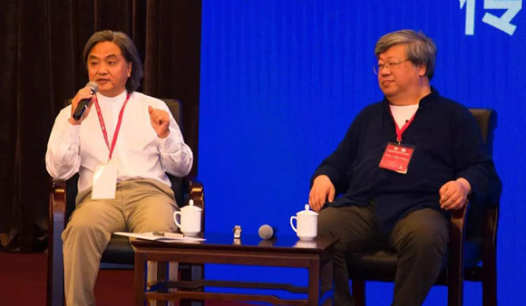
议传统工艺振兴，让非遗重回当代生活!
...
-
【文化部/教育部PACC非遗研培成果展览】亮相第四届中国非物质文化遗产博览会
9月23日
将传统工艺融入当代设计，百花齐放更显创意！
...
-
【PACC非遗跨界】锡绣礼服 丛林之光
9月18日
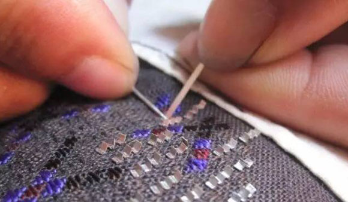
层层叠叠的面料，相互成趣的刺绣片，这就是最美的状态，无与伦比的《丛林之光》！
...
-
【非遗传承】文化部2016青海果洛培训班学员回访活动纪实!
7月20日
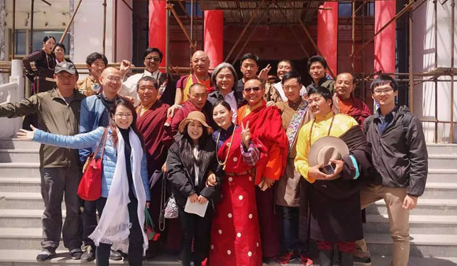
文化部非遗研培计划"2016青海果洛学员回访活动"，传承与创新同行！扎西德勒！
...
-
【非遗回访】上海大学青海果洛传统工艺工作站揭牌成立！
7月19日
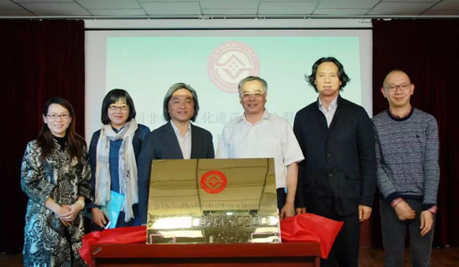
共建“活态、活性与活力”的上海大学驻青海果洛传统工艺工作站！
...
-
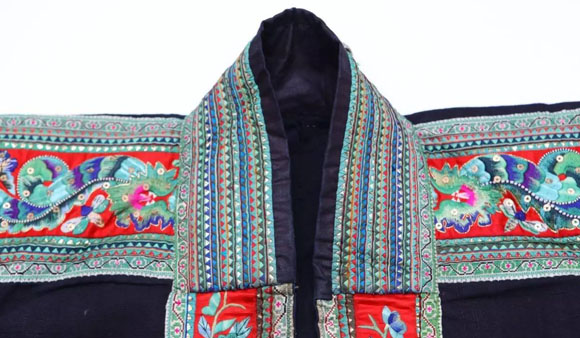
传承非遗文化，感受一针一线流走指尖的传承，看织绣艺人如何穿针走线绣出精美绝伦的图案！
...
-
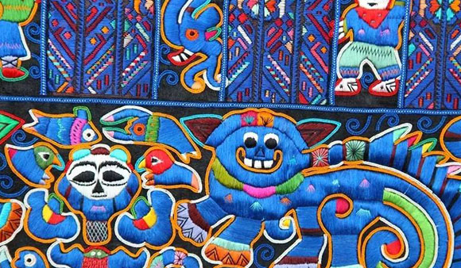
用世界的眼光，融本土的元素，走非遗创新之路！
...
-
【非遗竹艺研修】毕业展览暨毕业典礼圆满召开！
6月18日
展现非遗魅力，重视活态传承！为期一个月的竹艺研修班圆满结束！
...
-
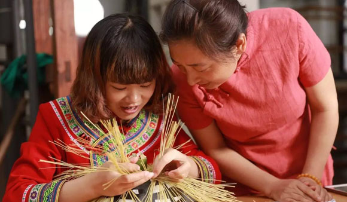
引入国际设计资源和中国传统非遗进行碰撞，融合创新！
...
-
【非遗竹艺研修 | 现场报道】留住手艺，传承创新
5月27日
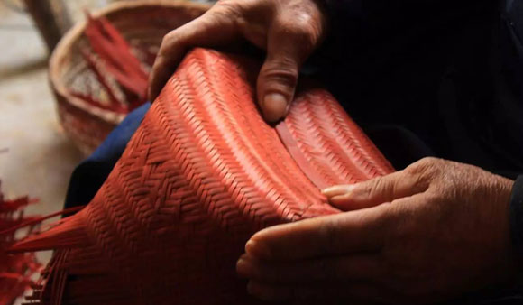
强基础，拓眼界，将中国竹文化融入时代创新思路，实现可持续的发展。
...
-
中国非物质文化遗产传承人群研修培训计划（竹艺研修班）暨“一竹一世界”2016国际竹创意设计工作营开幕
5月16日
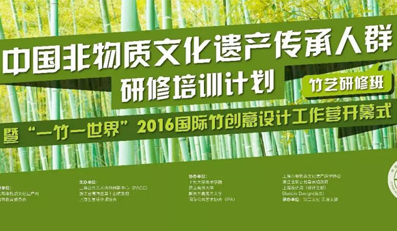
推动文化创意与乡村业态发展的互动，加强美丽乡村建设与城市生活美学之间的关系!
...
-
【非遗研习 | 织绣创新】跨界设计也疯狂(修正版)
5月3日
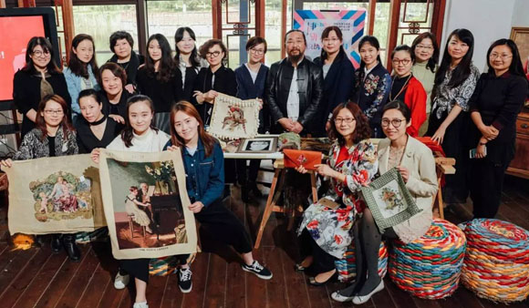
跨界设计师和当代艺术家加入非遗传承创新的队伍，集合品牌力量，为传统技艺注入新的能量！
...